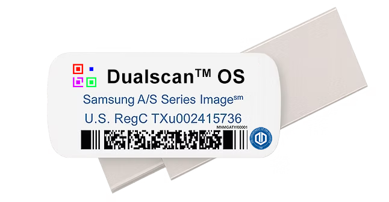
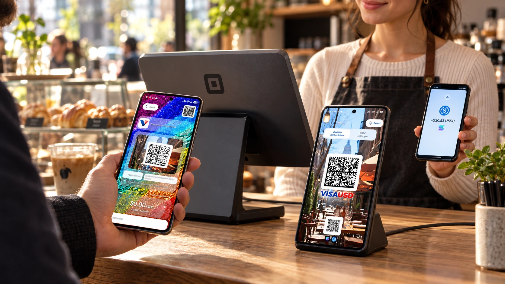

USPS Money
The local wallet experience, with PIN and biometric unlock, Retail Codes, Typelocker scanning, and customizable backgrounds.
COMMUNITY + COMMERCIAL · OCTOBER 2026
Wallets. Music. Private collections. A personal workspace, carried on USB-C and restored to your Galaxy.
Samsung Smart Switch distribution for compatible Galaxy devices.
Android 14+ for Diamond’s supported USB bit-perfect path.

START HERE / 01
Keep the supplied restore folder intact. GitHub creates the ZIP for you; after extraction, copy only SmartSwitchBackup2 to the root of your USB-C drive.
Choose Code → Download ZIP on GitHub, or use the button below. Extract the downloaded repository folder on your computer.
Open the extracted repository. Copy SmartSwitchBackup2 directly to the drive’s top level. Keep all its contents and folder names unchanged.
Connect the drive to a compatible Galaxy. Open Settings → Accounts and backup → Smart Switch, then select external storage / the SD-card icon.
Under Restore from, choose the supplied backup on USB storage. Select the available categories, tap Restore, and keep the drive connected until completion.
Install VisaUSD 1.0.15 · build 17 from the OEM app folder and choose Update. Keep the existing app installed to preserve your wallet, PIN and settings. This fixes Receive DataMatrix and Publicnode account reads. The current download is the fresh replacement backup supplied after build 17 was confirmed working on the Galaxy. Encrypted restored app versions remain unverified.
The updated Smart Switch backup includes Diamond Player’s base APK. The separate USTFD USPS CRADA APPS Oct 2026 folder also includes Diamond Player 1.4.3 and the updated VisaUSD 1.0.15 APK.
Use the actual folder name SmartSwitchBackup2. Smart Switch restores apps and settings to supported Samsung Galaxy devices; this package does not flash Android firmware. Restore availability varies with the receiving model and Smart Switch version. Samsung’s restore guide ↗
Disable Samsung Account encryption and select No encryption when exporting a public derivative, so recipients can restore without the author’s account.
Select Password for a private distribution. Give intended recipients the password separately.
Use Samsung Account encryption only for a private derivative intended for that account. Menu labels vary by Smart Switch version.
Choose the export option in Smart Switch before creating the derivative backup. Renaming files or changing an existing download does not change its encryption.
A CLOSER LOOK / 02
A guided screenshot tour of the supplied setup. Move from the desktop into the apps, then back to a workspace that feels like you.
The familiar Galaxy home screen, with the five core OEM apps kept visible in the dock.
View the core component manifest ↗THE INCLUDED ECOSYSTEM / 03
Purpose-built Dualscan apps alongside the platform services and independently licensed applications shown in the supplied setup.
The local wallet experience, with PIN and biometric unlock, Retail Codes, Typelocker scanning, and customizable backgrounds.
A local wallet with biometric Send confirmation. Its Gaming Credits panel includes NFC tap transfers and the built-in U.S. Gamer Community Manual.
The separate wallet and banking launchers shown on the desktop. They keep their own application behavior, services, accounts, and terms.
Gmail and Outlook entries, plus the ecosystem’s code tools. Typelocker™ Cypher serves recovery; Typelocker™ Sypher serves ordinary URL scans.
The Briar-based messaging app in the supplied ecosystem. Its GPL licensing and source obligations remain separate from the Dualscan distribution license.
Read component notices ↗A settings guide and shortcut for compatible Bluetooth audio. USB DAC playback is handled separately by Diamond Player.
Explore Diamond audio ↗Apple Music, Suno, Amazon Music, ChatGPT, Gemini, UNO and Samsung apps appear in the supplied screenshots. Their services, subscriptions, trademarks and redistribution terms remain their own.
VISAUSD™ PoS™ / USDC CHECKOUT
A customer-facing payment terminal. A separate merchant wallet. USDC on Solana or Polygon, alongside the register you already use.
No USDC service fee below 3 USDC. Native network costs are separate. Discover wallet compatibility, setup and mistaken-asset safeguards.

VISAUSD · ANDROID RELEASE 1.0.15
Save your U.S. Gamer Network Tag, check in at events, and carry your Solana event records forward. Explore the official rulebook and whitepaper, and get the Android release directly from GitHub.
Explore U.S. Gamer DIAMOND™ PLAYER
DIAMOND™ PLAYERMUSIC, VIDEO & PHOTOS / 04
Play encrypted Dualscan media directly from a selected folder or USB drive, without extracting loose media into Android Gallery.
Diamond’s native PCM engine automatically selects a connected USB DAC. On Android 14+, it requests the exact supported format and bit-perfect mixer behavior. The indicator appears only while the matching route and format checks are active.
Bit-perfect output requires compatible Android USB audio hardware, HAL support and an accepted exact format. Android 14 alone does not guarantee it. Ordinary phone audio routes remain available. Android’s preferred mixer specification ↗
The current Diamond 1.4.3 build is an offline native player for local encrypted collections. It is independent of the earlier Tidal WebView/Decent experiment. Physical DAC bit-identity qualification is separate from the app’s route checks.
DIAMOND PLAYER 1.4.0 / PRO AUDIO
Direct-to-.diamond recording with USB-C ADC input, stereo waveforms and continuous peak and loudness checks.
For the AES.org & Digital Arts Pro & Education Community.
Explore Diamond™ Player Pro AudioDark and light interfaces. Fullscreen audio analysis. Diamond Certified Recording.
MAKE IT YOURS / 06
The Dualscan Wallpaper Library brings color, artwork and character to your OS.
Explore the included library in Gallery. Choose an image, open its menu, then select Set as wallpaper for the home screen or lock screen. Your wallet backgrounds can be customized separately inside the wallet apps.
THE PROFESSIONAL SUITE / 07
Two tools. One dedicated
MacBook Pro.
The Dualscan Professional Suite is delivered on its own licensed MacBook Pro unit. Prepare Diamond media, create interactive menus, and check the complete experience from one authoring workstation.
Professional Suite enquiriesBuild the collection, in the order you intended. Sequence music, video, photos and documents, set file names, and prepare encrypted .diamond media for compatible Diamond Players.
Give a release its own opening experience. Design title, chapter and popup menus for the compatible Diamond Player TV menu reader, then simulate navigation before exporting the complete menu.diamond release.
Create. Check.
Deliver.
The Professional Suite is supplied separately from the Dualscan OS download. Menu resolution describes exported artwork; media playback depends on the receiving hardware and supported formats. Interactive menus require the compatible TV menu reader and are separate from the mobile Player.
BUILD ON IT / 08
The Dualscan OS Community & Commercial License lets individuals, developers and businesses use, customize and redistribute the licensed Dualscan distribution.
No separate commercial license or royalty is required for compliant use.
Read the full license ↗Preserve the core. Keep the designated OEM apps operational, accessible, and in their stated dock positions.
Customize your derivative. Add apps, themes, interfaces and authorized functionality. Identify your edition and disclose its modifications.
Keep the notices. Retain the license and attribution. Third-party software keeps its own license and permissions.
Respect the branding. Software redistribution rights do not independently grant additional trademark rights.
YOUR NEXT DESKTOP STARTS HERE.